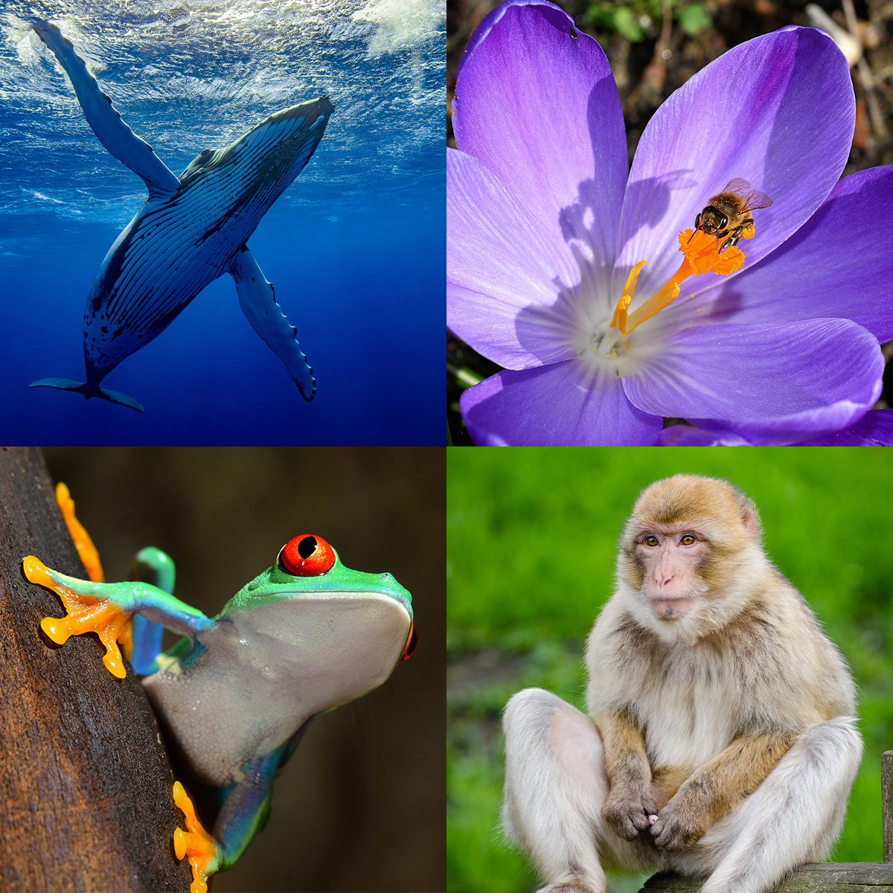
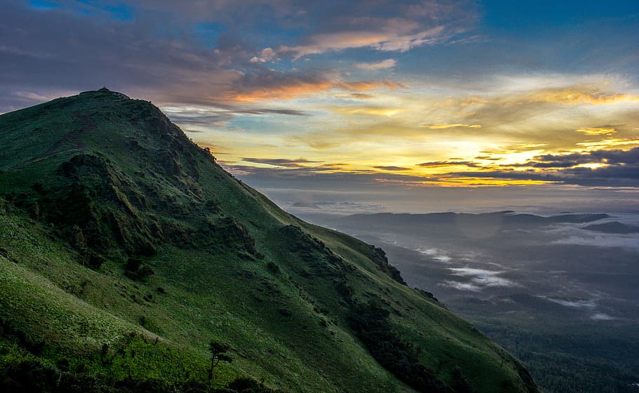
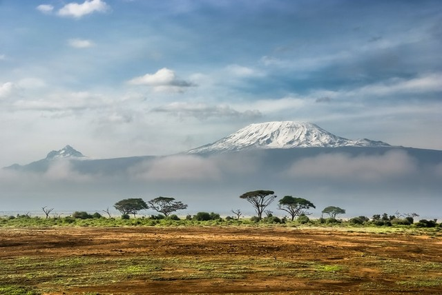
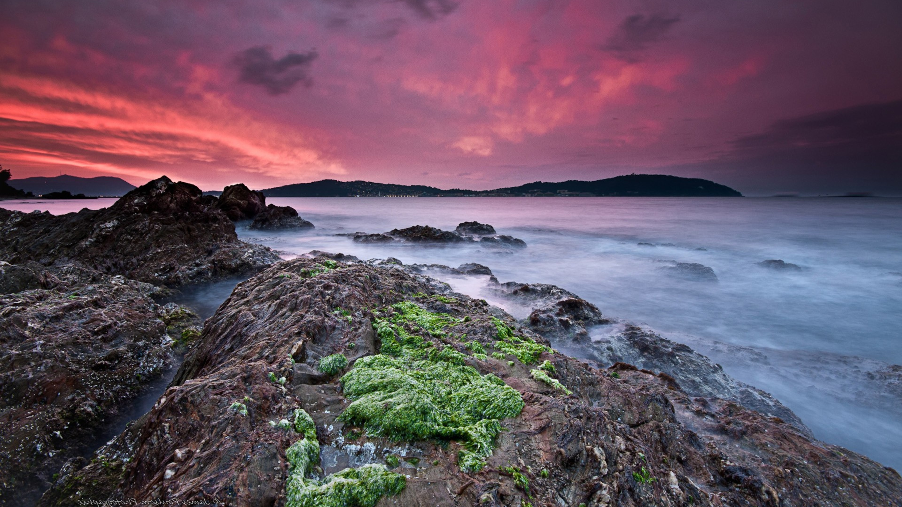
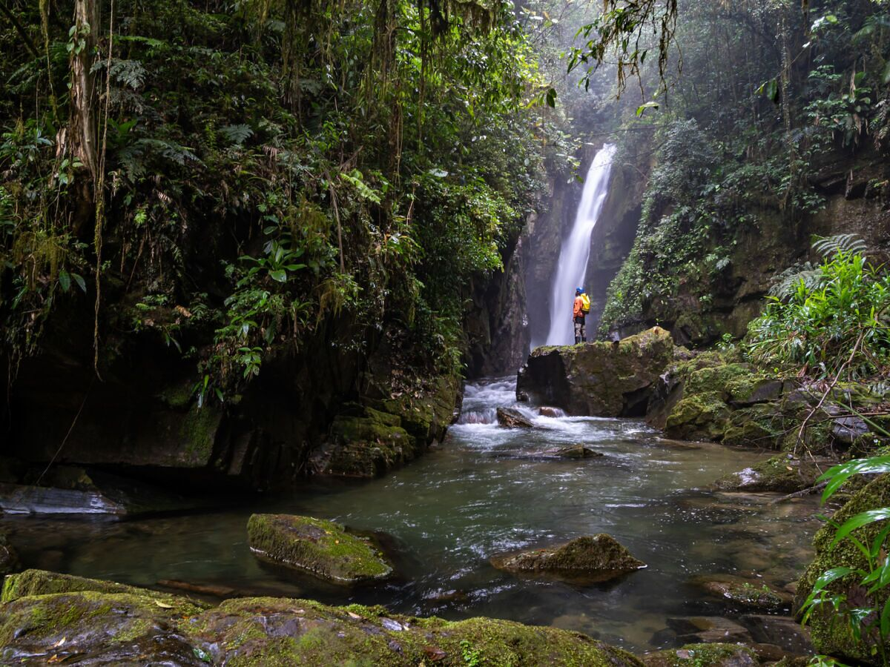

Zone of biodiversity
The biodiversity zone is a geographical area known for its wide range of living organisms and ecosystems. It encompasses various habitats like rainforests, coral reefs, and wetlands, all of which are crucial for maintaining ecological balance and supporting different species. Biodiversity hotspots found within these zones are especially significant due to their high number of unique species. Human activities such as deforestation, pollution, and climate change pose serious threats to the biodiversity in these areas. Therefore, conservation efforts are essential to protect these diverse ecosystems and the valuable services they offer, such as clean air, water, and food. Implementing protected areas and sustainable management practices are key strategies for preserving biodiversity within these zones. Effective conservation actions require collaboration among governments, organizations, and local communities. Providing economic incentives for conservation can help balance human development with biodiversity preservation in these regions. It is crucial to raise public awareness and educate people about the importance of biodiversity to promote a culture of conservation within and beyond these zones.

list of biodiverse zone:
The User biodiverse zone is a fictional or undefined location. It seems like you might have intended to write a specific term but accidentally left it as "User."
Characteristics: Without a specific definition, it's challenging to provide characteristics of the User biodiverse zone. However, biodiversity hotspots typically exhibit exceptionally high levels of species diversity and endemism.
While the term "User" in this context might be a placeholder or an error, recognizing and protecting biodiverse zones globally is crucial for conserving Earth's biodiversity, ensuring ecosystem resilience, and supporting human well-being.
1. Amazon Rainforest (South America)
2. Sundaland (Southeast Asia)
3. Western Ghats (India)
4. Caribbean Islands
5. Mediterranean Basin
6. Cape Floristic Region (South Africa)
7. Wallacea (Indonesia)
8. California Floristic Province (United States)
9. Madrean Pine-Oak Woodlands (Mexico and United States)
10. Atlantic Forest (South America)
Amazon Rainforest (South America)
The Amazon Rainforest is a vast and biodiverse region in South America, spanning nine countries primarily Brazil. It covers 5.5 million square kilometers and hosts 10-15% of Earth's species. Threatened by deforestation for agriculture and logging, conservation efforts focus on sustainable practices and protecting indigenous land rights.
Western Ghats
The Western Ghats are a range of mountains that stretches from Gujarat state to Kerala on India's western coast. This is a succinct synopsis. Stretching over 1,600 kilometers (990 miles) parallel to India's western coast. The Western Ghats are home to an enormous variety of flora and fauna, including many endemic species that are unique to the region. They are regarded as one of the eight "hottest hotspots" of biological diversity in the world. The region is home to a variety of ecosystems, such as montane grasslands, shola woods, and tropical and subtropical moist broadleaf forests. It also has a number of significant rivers and other bodies of water. Cultural Importance: The Western Ghats are significant not only ecologically but also culturally, as seen by the numerous indigenous communities and ongoing customs that thrive there.
Wallacea
Wallacea is an archipelago that spans the Lesser Sunda Islands, the Moluccas (Maluku), and Sulawesi in eastern Indonesia. With a high level of endemism, this region is well known for its extraordinary biodiversity. Wallacea is home to many species that are exclusive to the region because of its isolation. Wallacea is denoted by Wallace's Line, a biogeographical division between Australian and Asian species, and named for the naturalist Alfred Russel Wallace who made the discovery. This line, which connects the islands of Bali and Lombok, denotes a key area of transition. Deforestation, habitat devastation, and overuse of natural resources are just a few of the conservation issues Wallacea is facing. Protected areas are created and sustainable practices are encouraged as part of the efforts to preserve its distinctive ecosystems.
Mediterranean Basin
The Mediterranean Basin stretches across southern Europe, northern Africa, and southwestern Asia, including countries such as Spain, France, Italy, Greece, Turkey, Egypt, Libya, Tunisia, Algeria, and Morocco. The region is characterized by a Mediterranean climate, with hot, dry summers and mild, wet winters. This climate pattern supports a diverse range of ecosystems, including forests, scrublands, grasslands, and coastal habitats. The Mediterranean Basin is recognized as one of the world's biodiversity hotspots, hosting a rich variety of plant and animal species, many of which are endemic to the region. However, it also faces significant threats from habitat loss, pollution, climate change, and invasive species. The Mediterranean Basin is steeped in history and cultural significance, with ancient civilizations such as the Greeks, Romans, Egyptians, and Phoenicians leaving their mark on the landscape through architecture, art, and traditions. Conservation efforts in the Mediterranean Basin focus on protecting its natural and cultural heritage, promoting sustainable land use practices, and addressing environmental challenges such as overexploitation of resources and coastal development.
Atlantic Forest
The Atlantic Forest (Portuguese: Mata Atlântica) is a richly diverse ecosystem that extends along the Atlantic coast of Brazil, from Rio Grande do Norte state in the northeast to Rio Grande do Sul state in the south, and inland as far as Paraguay and the Misiones Province of Argentina. This South American forest is characterized by a high biodiversity and endemism1, housing one in 14 of the Earth’s total plant species and one in 20 of its vertebrate species2. It comprises 15 ecoregions, including tropical and subtropical rain forest, coastal forest, mangroves, and Araucaria moist forest2. Despite its rich biodiversity, the Atlantic Forest is one of the most endangered biomes in the world, with over 85% of the original area deforested, threatening many plant and animal species with extinction1. This region is also home to around 150 million people and generates 70% of Brazil’s gross domestic product
Sundaland
Sundaland, also known as Sundaica or the Sundaic region, is a biogeographical area of Southeastern Asia1. It corresponds to a larger landmass that was exposed during periods of lower sea levels throughout the last 2.6 million years. This region encompasses the Sunda shelf, which includes the Malay Peninsula, Borneo, Sumatra, Java, and their surrounding islands. During the Ice Age, Sundaland was a vast expanse of land connecting these present-day islands. It was home to diverse ecosystems, including tropical rainforests, swamps, river systems, and grasslands, supporting a rich array of plant and animal species. Sundaland played a crucial role in early human migration and cultural diversity in Southeast Asia. However, as the Ice Age ended and sea levels rose, Sundaland gradually submerged, forming the islands we see today.

Agriculture and Biodiversity:
Agriculture has a significant influence on biodiversity, frequently resulting in the loss of habitats, genetic homogeneity, and deterioration of ecosystems. The adoption of intensive farming methods, such as monoculture and the use of agrochemicals, plays a key role in the decline of biodiversity. Nevertheless, biodiversity plays a critical role in sustainable agriculture by offering essential ecosystem services like pollination and pest management. Approaches based on agroecology advocate for farming practices that are friendly to biodiversity, such as crop diversification and organic farming, which not only improve agricultural output but also enhance ecosystem well-being. It is essential to have policy backing and community involvement to encourage the conservation of biodiversity in agricultural settings, ensuring a sustainable future for food production and the preservation of ecosystems.
last secind

{kind=link}
Ecotourism
Ecotourism advocates for responsible travel to natural environments, focusing on preserving biodiversity and enhancing community welfare. It aims to reduce negative effects on the environment, boost local economies, and raise awareness among tourists about the significance of safeguarding natural habitats and wildlife. Through offering financial benefits for conservation efforts, ecotourism is instrumental in safeguarding biodiversity and encouraging environmental responsibility.
Urban Biodiversity
Urban biodiversity refers to the variety of plant, animal, and microbial life found within cities and towns, encompassing parks, gardens, green spaces, water bodies, and even the built environment itself. Despite the challenges posed by urbanization, cities harbor a surprising array of species, adapted to survive and even thrive amidst human-dominated landscapes. Urban biodiversity provides essential ecosystem services such as air and water purification, pollination, and pest control, contributing to the well-being of urban residents and enhancing the resilience of urban ecosystems to environmental stresses. Moreover, contact with urban nature has been linked to improved mental and physical health, highlighting the importance of maintaining and enhancing biodiversity within urban environments. Conservation efforts in cities often involve habitat restoration, creation of green infrastructure, sustainable urban planning, and community engagement to foster biodiversity-friendly practices and ensure urban spaces remain vibrant, livable, and ecologically sustainable.